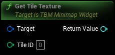

Gets the tile texture from tile number (for currently active grid)
|
Target
TBM Minimap Widget Object Reference
|
|
|
Tile ID
Integer
|
|
Return Value
Texture 2D Soft Object Reference
|
Gets the tile texture from tile number (for currently active grid) |